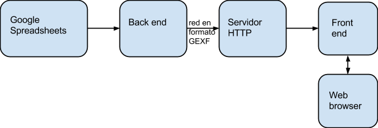
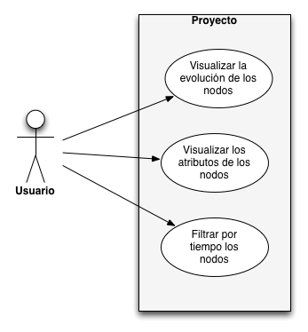

Especificación de requerimientos
Visualizacion dinámica de redes de influencia y su aplicación en ciencias políticas
IntroducciónLas personas tienden a establecer distintos tipos de relaciones entre sí; relaciones que evolucionan a lo largo del tiempo. Por medio de este sistema se podrá observar gráficamente de qué manera van evolucionando estas relaciones; en particular, podrá observarse el momento de creación de una relación; cómo va evolucionando la confianza o la fuerza de la relación que tienen entre sí diferentes personas; y en qué momento se rompe la relación. Todo esto se visualiza por medio de un grafo que va cambiando en en el tiempo. La entrada de datos al sistema consiste de dos spreadsheets, uno que indica los nodos del grafo (que corresponden a personas); y otro que indica las relaciones entre las personas. Los spreadsheets includen artibutos fechados de nodos y relaciones; por ejemplo en que momento deben aparecer o desaparecer, o en que momento cambia la fuerza de una relación y por qué cambió
ObjetivosEl objetivo del proyecto es visualizar las relaciones que ha tenido una persona en específico a lo largo de los años con diferentes personas. Se busca identificar el tipo de relacion; por ejemplo el grado de amistad o enemistad, además de la fecha en que sucedieron estos cambios en las relaciones. El sistema debe permitir ir viendo estos cambios a lo largo del tiempo mostrando cómo aparecen y desaparecen las relaciones entre los individuos.
Alcance (scope)El proyecto generará una red dinámica del historial social de la persona y que además cambiará de acuerdo al tiempo. La red se visualizará a través de una página web con opciones para ver el estado de las relaciones del grupo en una fecha en específico o ver todo el desarrollo de la red de relaciones en un intervalo de tiempo. Este resultado se producirá con software especializado para visualización de redes y con información de la persona y sus relaciones que es tomada de spreadsheets cuyo formato se describe más adelante
RestriccionesEl sistema tiene ciertos límites en cuanto al tamaño de la red que es capaz de manejar y visualizar de manera efectiva; estos límites se describen más adelante
Diagrama arquitectónico  Perfiles de usuarioSociologo El usuario promedio se define como un sociólogo interesado en visualizar información que representa las relaciones de las redes sociales de un determinado individuo o grupo de personas. Por ejemplo, un sociólogo/analista político podría estar interesado en visualizar la evolución de la influencia de un cierto actor político sobre otros actores. O un sociólogo interesado en un determinado grupo de usuarios de Facebook podría interesarse en la evolución de relaciones de amistad/enemistad entre las personas que conforman ese grupo.
Casos de uso  Modelos de datosSe utilizarán diferentes fuentes y modelos de datos. Entre los cuales se encuentran dos hojas de cálculo, Google SpreadSheets, de las cuales una representa los nodos, de nombre Nodos, y otra representa las relaciones de estos nodos, Links. A continuación una breve descripción del modelo de datos de las hojas de calculo.
Links- Sociologo
- Usuario que definió el link
- Actor 1
- Primer nodo que forma parte la relación.
- Actor 2
- Segundo nodo que forma parte la relación.
- Valor estimado de la relación
- Fecha
- Fecha estimada en la que inició la relación.
- Fragmento de texto copiado de la fuente
- Fragmento de texto de la fuente que evidencia la relación entre los actores.
- Fuente
- Recurso del cual se deduce la relación.
- Fecha de la Fuente
- Fecha en que la fuente fue creada.
- Notas adicionales
- Información adicional no mencionada en los campos anteriores.
- Sociologo
- Usuario que definió el nodo
- Actor 1
- Nombre del actor representado por el nodo.
- Fecha
- Fecha estimada del dato.
- Descripción breve del dato
- Descripción de un dato del actor
- Fuente del dato
- Recurso en el cual se encontró al Actor.
- Fecha de la fuente
- Fecha en que la fuente fue creada.s.
Además se utilizará la especificación de datos tipo xsd llamado GEXF(Graph Exchange XML Format), el cual es un lenguaje que describe estructuras de redes complejas, sus datos asociados y dinámicas. Se puede encontrar más informacion en la siguiente liga: http://gexf.net/format/
Conclusionessobre el procedimiento en general
Bibliografia Heer, J., Shneiderman, B. (2012).Interactive Dynamics for Visual Analysis. Communications of the ACM, 55(4), 45-54. doi:10.1145/2133806.2133821. Obtenido el 7 de noviembre de 2013. Jia, Y., Garland, M., & Hart, J. C. (2011). Social Network Clustering and Visualization using Hierarchical Edge Bundles. Computer Graphics Forum, 30(8), 2314-2327. doi:10.1111/j.1467-8659.2011.02037.x. Obtenido el 7 de noviembre de 2013.